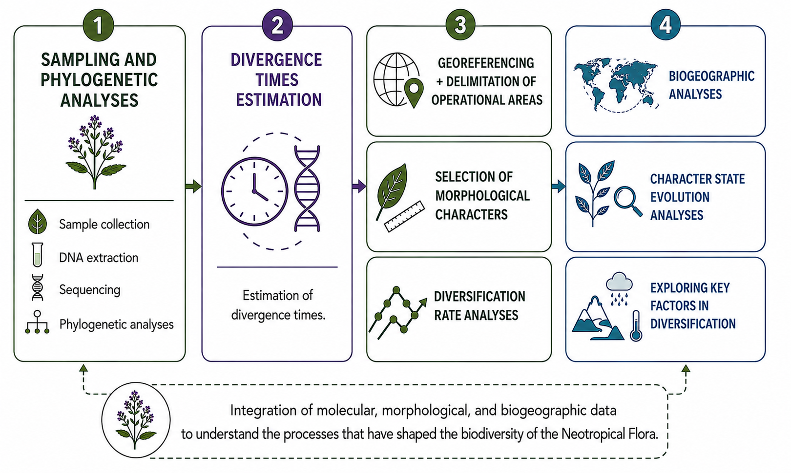
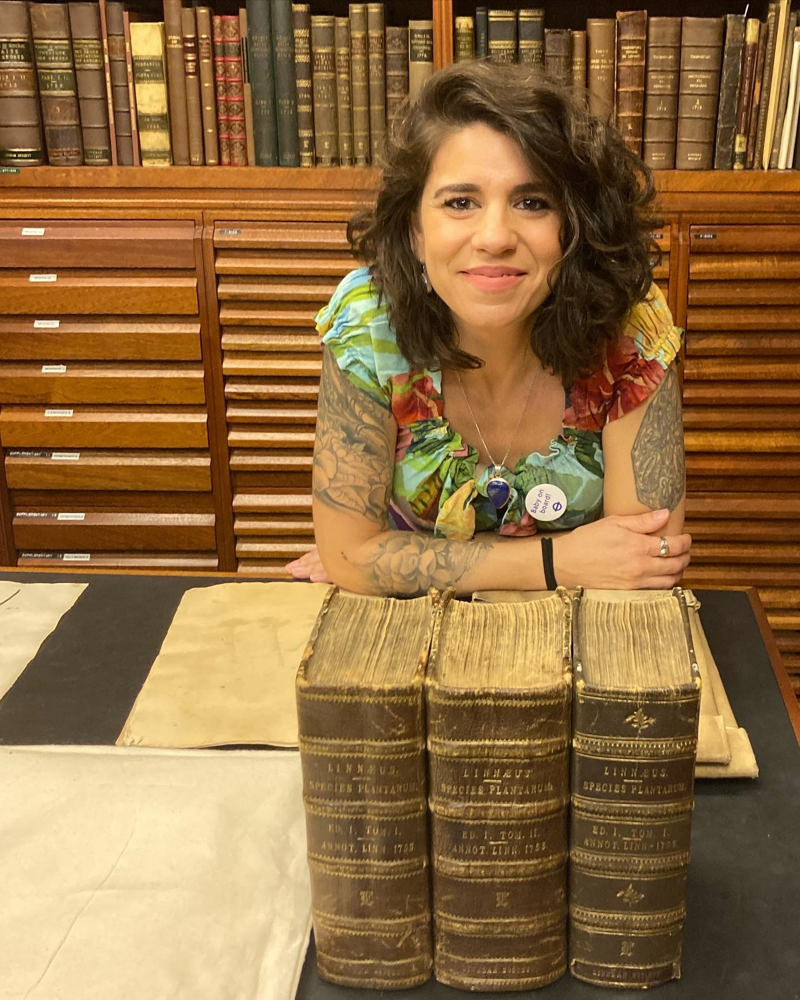

Welcome to the Thode Lab. We combine molecular phylogenomics, bioinformatics, taxonomy, and historical biogeography to understand how plants diversify across time and space.
Research in our laboratory focuses on understanding the evolutionary history of Neotropical plant lineages, using Verbenaceae (Lamiales) as a primary study system. We integrate taxonomy, molecular phylogenetics, phylogenomics, and historical biogeography to investigate how plant lineages diversified across the heterogeneous landscapes of the Americas. Our work combines fieldwork, herbarium collections, and bioinformatic approaches to address fundamental questions about the origin, diversification, and classification of flowering plants, with a particular emphasis on the evolution of nuclear and chloroplast genomes and the morphological traits that define plant lineages.
Our long-term goal is to build a comprehensive evolutionary and biogeographic framework for Verbenaceae and other Neotropical plant lineages, bridging taxonomy, genomics, and conservation biology. By inferring robust phylogenetic hypotheses, reconstructing biogeographic histories, and documenting patterns of morphological evolution, we aim to understand how biotic and abiotic factors have shaped the diversification of Neotropical plant groups. Ultimately, we are committed to generating scientific knowledge that supports the biodiversity conservation and sustainable management of Neotropical flora.
Our research integrates multiple approaches to investigate plant evolution and diversification:

Work in our Lab has been supported by: the Universidade Federal do Rio Grande do Sul (UFRGS); Programa de Pós-graduação em Botânica da UFRGS; Conselho Nacional de Desenvolvimento Científico e Tecnológico (CNPq); Fundação de Amparo a Pesquisa do Estado do Rio Grande do Sul (FAPERGS); Coordenação de Aperfeiçoamento de Pessoal de Nível Superior (CAPES); and the Bentham-Moxon Trust (Royal Botanic Gardens, Kew).
Understanding the processes that shape species diversification is one of the central questions in evolutionary biology. Phylogenetic studies combined with genomic, morphological, ecological, and geographic data can test macroevolutionary hypotheses, providing essential information for biodiversity conservation. High-throughput DNA sequencing (HTS) technologies offer great potential for evolutionary studies, allowing efficient sequencing of thousands of base pairs and increasing our ability to answer fundamental questions about biodiversity. Our research uses Verbenaceae (Lamiales) as a primary model system to investigate how biotic and abiotic factors have shaped the diversification of Neotropical plant lineages, combining nuclear phylogenomics, historical biogeography, diversification analyses, and integrative taxonomy.
Verbenaceae (Lamiales) comprises 34 genera and approximately 800 species, mainly distributed in the New World, with a few representatives in Africa and along the Indian Ocean Rim. The family includes economically important species used for seasonings, ornamentals, pharmaceuticals, teas, and cosmetics, and occupies a remarkable diversity of habitats. Verbenaceae occupies distinct ecoregions across the Neotropics, from xeric shrublands and cloud forests to wet Neotropical forests, making it an outstanding model for studying biogeographic patterns and the role of biotic and abiotic factors in plant diversification. Despite its ecological and economic relevance, Verbenaceae remains severely underrepresented in genomic studies, and a large number of taxonomic questions remain unresolved in the light of nuclear genomic data.
With the advance of high-throughput sequencing approaches, revisiting the relationships within the family using nuclear markers has become essential for a better understanding of its evolution, classification, and conservation.
Main objectives:
Little is known about the spatio-temporal evolution of Verbenaceae. Previous biogeographic work has suggested a South American origin for the family and its major clades, but these hypotheses have not been tested with model-based ancestral area reconstruction approaches or with well-resolved, dated phylogenies. The drivers of diversification across the family's lineages including the influence of morphological traits, climatic events, and geographic distribution also remain largely unexplored.
Main objectives:
Taxonomy is the science that recognizes and delimits species, and it is indispensable for any biological study scientific names are the entry point to accumulated knowledge about organisms, their ecology, distribution, and conservation status. Taxonomic revisions update our understanding of species boundaries through a thorough review of all available evidence, proposing new classifications and accommodating new findings generated by molecular and morphological studies. Conservation of species and taxonomy are deeply interconnected: it is necessary to know and recognize a species before it can be protected.
Verbenaceae includes numerous species with restricted distributions and high potential for bioprospecting, yet many remain taxonomically understudied or undescribed. Filling these knowledge gaps is essential for conserving species and their habitats, and for promoting the sustainable use of biological resources with economic and pharmaceutical potential.
Main objectives:
Our laboratory is committed to training the next generation of plant systematists, taxonomists, and evolutionary biologists in South America and beyond. We welcome students and researchers at all career stages who share a passion for plant diversity and evolution.

I am a Professor in the Department of Botany at the Universidade Federal do Rio Grande do Sul (UFRGS), Brazil, where I also supervise graduate students in the Programa de Pós-Graduação em Botânica. My research focuses on plant systematics, taxonomy, molecular phylogenetics, phylogenomics, plastome evolution, historical biogeography, and the diversification of Neotropical plant lineages, with a particular emphasis on the family Verbenaceae (Lamiales).
Laura Luz Nunes 2022-2025
Master's student, Botany (Programa de Pós-Graduação em Botânica - UFRGS)
Project: Taxonomic revision and conservation of Glechon Spreng. (Lamiaceae, Mentheae)
Projeto: Revisão taxonômica e conservação do gênero Glechon Spreng. (Lamiaceae, Mentheae)
Filipe Backes Zatta 2026 - atual
Undergraduate Student, Biology (Federal University of Rio Grande do Sul, Brazil)
Project: Verbena (Verbenaceae) phylogenomics and historical biogeography
Projeto: Análises filogenômicas e biogeográficas do gênero Verbena (Verbenaceae)
Sol da Prá 2026 - atual
Undergraduate Student, Biology (Federal University of Rio Grande do Sul, Brazil)
Project: Verbenaceae phylogenomics: implications on the classification of the Tribe Verbenaeae
Projeto: Filogenômica de Verbenaceae: implicações para a classificação da Tribo Verbeneae
Italo Angelo Sguaisser Rech 2024-2026
Undergraduate Student, Biology (Federal University of Rio Grande do Sul, Brazil)
Project: Data mining - using available DNA sequences for Verbenaceae (Lamiales) phylogenomic studies
Undergraduate Thesis: The chloroplast genome of Petrea volubilis and Verbenaceae (Lamiales) comparative plastomics
Projeto: Data mining - Utilização de sequências de DNA já disponíveis para estudos filogenômicos de Verbenaceae (Lamiales)
Trabalho de conclusão de curso (TCC): O genoma do cloroplasto de Petrea volubilis e plastômica comparativa da família Verbenaceae (Lamiales)
Bruno dos Santos Prates 2022-2024
Undergraduate Student, Biology (Federal University of Rio Grande do Sul, Brazil)
Project: Verbenaceae (Lamilaes) phylogenomics and preliminary conservation status assessments
Projeto: Filogenômica de Verbenaceae (Lamiales) e análise de espécies raras na família